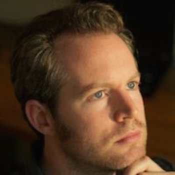

David Cunningham
Software Engineer at Google
@sparkprime
Jsonnet, Terraform & Packer
member of the academic programming languages community with many top conference publications. He began his career with a theory PhD from Imperial College London where he developed static type systems and program analysis techniques for safe concurrency in OO languages. He then joined the X10 team at IBM TJ Watson Research Center, developing the X10 language, source-to-source compiler and runtime. This work included a GPU compiler backend, many contributions to the C++ backend, maintenance of the compiler's frontend type system and leading the Resilient X10 project, which allowed X10 programs to tolerate node failures. For the last 18 months, Dave is a member of Google's Technical Infrastructure division, applying his programming languages experience to cluster management and service configuration tools, both directly on Google's internal infrastructure and for its public Cloud Platform. Dave is active in the open source community, contributing to Terraform's Google Compute Engine provider. He designed and built the Jsonnet configuration language as a Google 20% project. As a hobby, he is the founder and lead developer of the Grit Game Engine project and its spinoff -- a scripted image manipulation framework called LuaImg.
Additional background: http://spark.woaf.net/